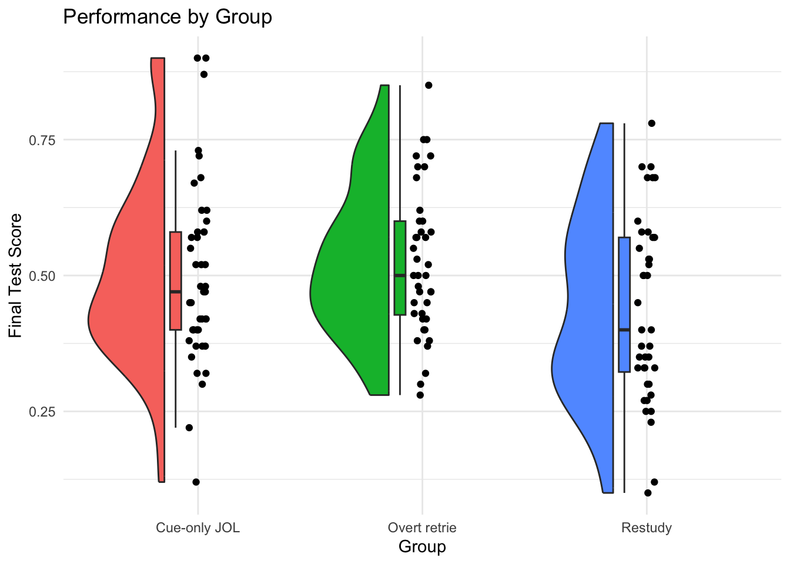

library(tidyverse)
library(papaja) #for formatting p values
library(emmeans) #for post-hoc t-tests
library(knitr) #for formatting tables
library(ggrain) #for creating raincloud plots
library(MOTE) #for getting ci around effect sizes
library(WebPower) #for calculating power
library(Superpower) #for simulating powerModule 6: Lab Instructions
Purpose
In today’s lab, we will practice calculating effect sizes and estimating power using different methods.
For today’s lab, you will need to load the following libraries (lots of them today!).
Research scenario
In today’s lab, we will be using data from Tekin et al., 2021; Experiment 1. In their study, participants viewed cue-target pairs (e.g., DOOR - HOUSE) during a study phase. After, groups either provided delayed judgments of learning (JOLs; e.g., given a cue word, how likely is it on a scale of 0-100 you will recall the target on a later test), attempted to retrieve the target word (DOOR-?), or restudied the same cue-target pairs (DOOR-HOUSE). Each group then took a final test over the pairs. The aim of their study was to determine whether engaging in retrieval practice or providing delayed JOLs had similar effects on memory.
Read in the data
First, let’s read in the data and then use View() to check it out.
Today’s dataset is called cue_data.csv. Let’s read it in and name it cue_data.
The data has 3 columns:
- Participant: a numeric indicator of participant number
- Total_Final: scores on the final test (percent correct)
- Condition: delayed judgment (
Cue-only JOL), retrieval (Overt retrie), or restudy the same pairs (Restudy) - there is also a condition calledCue-target Jthat we are not using.
Effect size
We are interested in the scores on the final test (Total Final) as a function of Condition (Condition). We will only be looking at three conditions: Restudy, Overt retrieval (retrieval practice), and Cue-Only JOL.
First, we will filter the data to remove Cue-target J from the Condition column.
Examine data.
Let’s take a look at the data, what changes might you want to make?
Visualize the differences between the three groups.
The visualization we are using is called a raincloud plot.

Run a model using lm() predicting Total_Final from Condition. Get a summary of your model.
What is your interpretation of each of the predictors? What does the F value tell you? What is the overall effect size?
Maybe instead we want all possible comparisons. One option is to change the reference level and run another regression. Another option is to use emmeans.
Use emmeans to get all pairwise comparisons. Apply a bonferroni adjustment.
Interpret your comparisons. How do these comparisons differ (or not) from your model summary above?
Calculate Cohen’s d “by hand” for each of the pairwise comparisons.
Cohen’s d: \(d = \frac{\overline{X}_1 - \overline{X}_2}{S_p}\)
Pooled SD (equal ns): \(S_p = \sqrt{\frac{(S_1^2 + S_2^2)}{2}}\)
Pooled SD (unequal ns): \(S_p = \sqrt{\frac{(n_1 - 1)S_1^2 + (n_2 - 1)S_2^2}{n_1 + n_2 - 2}}\)
First get means, standard deviations and ns.
Which equation for Pooled SD should we use?
Note: our Pooled SD will differ based on the comparison we’re testing.
Calculate Cohen’s d for each paired comparison.
Take a look at your effect sizes. Are they small, medium, or large?
There is an easier way!
We can also use the MOTE package to get an estimate of our effect size and a confidence interval around our effect size.
Let’s first check out the d.ind.t function. What information do you need to provide?
Compare these to the Cohen’s d values that you calculated “by hand.” How do they compare?
Now, write an APA style summary of your results. This should include information about your overall model (e.g., F and R2) as well as each of the pairwise comparisons and all relevant information (t, p, effect size, 95% CIs). Make sure you have corrected for pairwise comparisons and state which correction you used.
We ran a linear regression to examine the effect of delayed judgments of learning (JOLs), retrieval practice, and overt retries on memory. An omibus test revealed a significant effect of condition on memory, F(2, 120) = 3.26, p .042). The model explained a small proportion of variance in memory, with an R2 = 0.05 and an adjusted R2 = 0.04. To find the source of this effect, we computed pairwise comparisons for each of our conditions. Participants’ memory in the delayed judgment condition (M = 0.5, SD 0.17) did not differ significantly from participants’ memory in the overt retrieval condition (M = 0.52, SD 0.14), \(t(120) = -0.7, p > .999\), \(d_s\) = -0.16, 95% CI [-0.59, 0.27], nor did it differ from participants’ memory in the restudy condition (M = 0.44, SD 0.17), \(t(120) = 1.81, p = .220\), \(d_s\) = 0.37, 95% CI [-0.06, 0.81]. However, participants in the overt retrieval condition had significantly greater memory scores than participants in the restudy condition (M = 0.44, SD 0.17), \(t(120) = 2.47, p = .040\), \(d_s\) = 0.57, 95% CI [0.12, 1.01]. In summary, we found that overt retrieval resulted in better memory than restudying, but neither of these methods differed from delayed judgment.
Power
Calculate Power with WebPower
Using the WebPower package, calculate the the number of participants per group we need to have 90% power in our model to detect a difference.
Note that most power calculators ask for Cohen’s \(f^2\) instead of \(R^2\), so we’ll need to calculate that first.
\(f^2 = R^2 / (1 - R^2)\)
How many participants do we need for our study?
Simulation Power Analysis with Superpower
Book going over Superpower
Reviewer 2 asked you to calculate the power of Tekin et al (2021) Experiment 1 after you ran it. Set up a study design using the ANOVA_design function from Superpower. Use the same means, SD, and n (use 40 per group as SuperPowercannot do unequal sample sizes for one-way designs) from their Experiment 1 study (excluding the one condition). Run a power analysis on this data.
Now, let’s check out how much power we have. Here, we will run our analysis many times (nsims below) and seeing how many of those times we get a significant result.
What is our power to detect the overall effect of Condition? What about the pairwise comparisons between the groups?
What kind of power analysis would this be?
What do you think of the power for this study design?
Now, we want to run a replication study. Let’s plan a study where we want to collect 100 Ps per group.
Change ANOVA_design to reflect just this difference. Set N = 100.
What would are power be using the current study parameters to detect overall effect? How about each pairwise comparison?
What kind of power analysis would this be?
What do you think of the power for this study design?
Let’s say I want to power the study to be able to detect a .05 point difference on the final test between the Cue-Only JOLs and Overt Retrieval groups (e.g., the difference between their means).
Change ANOVA_design to reflect just this difference. Set N = 40.
What is our power to detect a .05 point difference with 40 per group?
Plot a power curve just for this difference. What sample size is needed to achieve 90% power?
How many participants would you need to achieve 90% power?